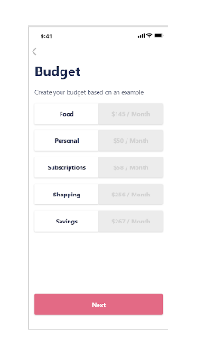
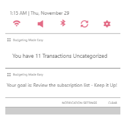
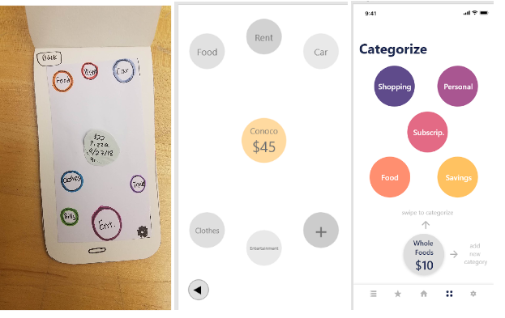
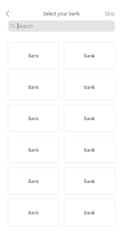
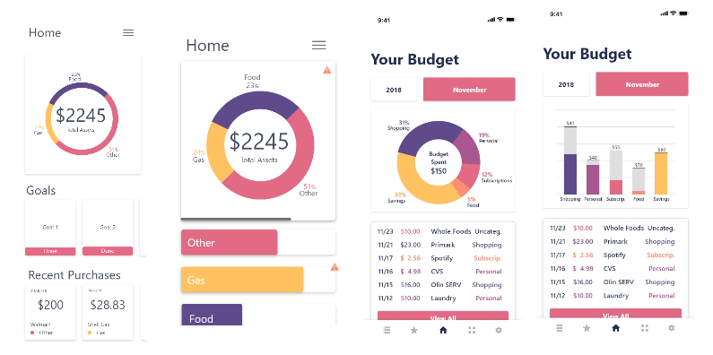
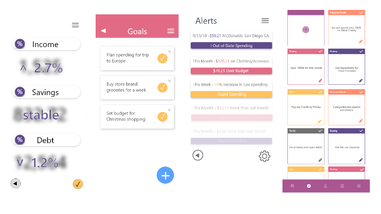
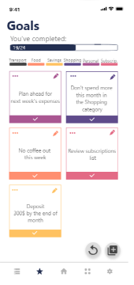
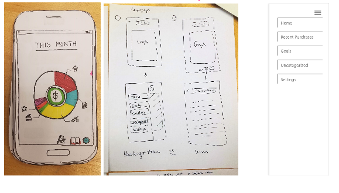
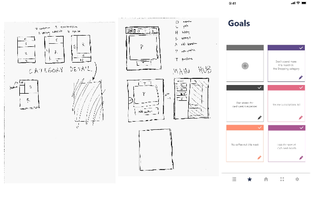

Build-A-Budget
Click to see our final prototype
Build-A-Budget is a budgeting app for young adults. Our goal is to get young adults to establish habits early in their personal finance.
The Problem
Based on a survey we sent near the beginning of the semester, students aren’t generally confident in their budgeting skills. Some used an existing budgeting tool, like Mint, but those who did often found it difficult to maintain, customize, or influence long-term spending habits. Some particular complaints were:
Technology makes it harder to save money
Today’s technology makes money more intangible and easier to overspend.
Existing solutions have too much information
Budgeting apps have information they do not need or understand, like a section for incorporating a mortgage in your budget.
Existing solutions little customizability
Budgeting apps have features or functionality, like a large number of specific categories, that aren’t useful but can’t be removed.
Existing solutions require a lot of maintenance
Some budgeting apps offer automated categorization functionality that is incorrect or not useful, and require a lot of user maintenance to correct.
One major theme from interviews and the survey that we wanted to focus on involved reactive versus proactive budgeting. Existing systems tend to use the former; an app might record your purchasing, generate a graph for the month, and show you where you spend too much. A proactive system, alternatively, would actively influence your future spending based on historic patterns, budget recommendations, or user-specified goals. These, we reason, would be more likely to actually change a user’s spending patterns and teach them how to budget effectively.
Our User's Needs
Throughout this phase, we have been guided and informed by the unique qualities of our user group. On the whole, we assumed and validated that majority of young adults are easily accessible, proactive and relatively open minded to trying alternative design features. They are accustomed to a clearly defined, minimalist aesthetic and have an experiential knowledge of affordances that allow many design features to become implicit and streamlined.
Based on the experiences of our team and responses to our budgeting survey, we were able to identify specific needs for young people dealing with finances:
Quick and/or automated
For a demographic that only spends a couple hours a week on financial matters (youngadultmoney.com), it’s important that our product takes as little time to use and maintain as possible. It should leverage automated systems where possible, and streamline any user interaction where not.
Simple, intuitive display of information
In our budgeting survey, we received multiple responses along the lines of “finances are complicated” or “I just don’t want to think about it.” If we are going to deliver financial information to a group of people who have little experience in finances, we have to be careful to sidestep information aversion by delivering budgeting information in simple, bite-sized chunks.
Customizable
In our research on existing applications as well as in user interviews, we found that budgeting apps are customizable, but only from a template. For example, an application may already have a set of categories with automatic categorization, but the user has to retroactively go back and delete categories and categorize themselves. We want to make our app customizable from the ground-up.
Why Build-A-Budget meets User Needs
During the needs analysis phase, we identified several problems that our targeted user group faces. To that end, Build-A-Budget has put these qualities front and center, actively catering to young adults’ preferences. Our design, both visually and informationally, contains no extraneous clutter. Most data can be accessed if desired, but things like transactions are not placed on the main page to distract from the central display. Notification frequency is optimized for impact, with only one or two appearing daily. Our categorization process is efficient and minimal, needing only a single action to sort a purchase and select whether it will always be categorized as such. Specific design attributes that highlight our value and support our user’s needs include:
- Tailored Budget Values
- Proactive Goals
- Rapid Categorization
- Complete a fully clickable prototype with animations that accurately represented our application.
- Explore the details of interaction design to make our app as simple, yet elegant, as possible.
- Develop something that helps young adults be more proactive about adulting.
- Accomplish our personal learning goals
- Sarah - want to learn more software
- Chris - going through the user design experience
- Minju - build confidence in software skills, do more work with design process and design principles
- Jeremy - develop platform-specific software skills (web, mobile, etc) and UX-specific design skills
- Charlie - front end web design mostly
- Maintain team health and have productive discussions about the project
- Design vs. functionality
- Level of detail
- Homepage Design
- Goals
- Menu
Build-A-Budget collects personal data including age and location and offers customized budget plans that users can modify at any time. These easy-to-implement plans will be built on crowdsourced data from our user group and external data sets. By suggesting how much young adults should be spending based on demographics, young adults will develop more realistic and accurate budget plans.

Based on our user interviews, we found that the value of a budgeting app comes from the insights it provides in future purchasing decisions. For this to be effective, users have to consistently interact with the app to receive feedback and check behavior. To encourage this, Build-A-Budget sends reminders for uncategorized transactions and goals via push notification. From inspirational design study, we realized that many budgeting apps lack this feature of notifications. In testing, users said that Build-A-Budget notifications would allow them to engage more intentionally and actively.

To minimize annoying tasks, Build-A-Budget offers a simplified action to categorize unknown purchases. Comparable apps in this space have automated categorization that is often inaccurate. During user interviews and in heuristic feedback, many users addressed that such design caused them to constantly edit or ignore categories. To get accurate data with minimal overhead, our app utilizes a drag and drop action which takes less than half a second to complete. If an item is categorized once, it will ask the user if they always want to categorize it this way, and then act accordingly. Users always have the option to add new categories, exclude a purchase from categories altogether, or edit a chosen category later. This maximizes customizability while optimizing for simplicity. The following images show this feature over time with the final design on the right.

While these features took a majority of our effort this semester, to our users, they are minimum conditions that must be met to justify engagement. Because young adults sort through such a high volume of content, they have become adept at filtering by these values and immediately discarding options that don’t achieve them. While many apps make this look effortless, in our UX process -- where we started out with nothing -- our team found that the implementation was not as easy as it appeared at the outset. We learned a lot and have put an incredible amount of intention into our current design. We admit there is an element of novelty missing in the result, but we argue that no amount of novelty could subvert a poorly designed foundation, which is why we emphasized some direct concerns of our users. As mentioned above, these are: quick, simple & intuitive, and customizable. We feel that Build-A-Budget effectively addresses each of these needs.
Our Goals and How We Met Them
We decided to not do any app development and rather focused on the design details in our clickable prototype. We made sure every element was included, and that everything fit together as a design.
We spent a lot of time thinking about different interactions with our prototype. We used Adobe XD to create the transitions between each screen. Along the way, we also discovered new features that XD offered in terms of animations.
We did our best to make Build-A-Budget more proactive with its goals and notifications. It includes notifications on goals, budget status, and uncategorized purchases.
Continued to improve HTML/CSS skills for team website, but did not get experience with app development, since we stuck with Adobe XD.
Got to learn more about user research and testing and iterative/collaborative design in Adobe XD.
Learned how to work with HTML/CSS from the team website.
Did not get to work on app development, since we used Adobe XD, but learned UX-specific design skills while doing the wireframe and prototype.
Since we ended up doing an app, didn’t get much experience with web specifically, but worked with XD on front end design.
We had some team reflection and bonding sessions, however not as many as we would have liked. The team had aimed to do plus/deltas every two weeks, but only ended up doing them a few times. However, we spent a lot of time discussing and sketching our app together as a team and discussing the pros/cons of each idea.
Tradeoffs and Why We Made Them
One of our biggest decisions during the last phase was to omit more advanced functionality to focus on the design. The only way for us to include more functionality was to switch platforms and move into actual app development. We decided that focusing on design would be more beneficial for the project because it showed where the functionality would go but could stand alone. For example, in the section where a user would chose and add a bank to their account, we just left a placeholder because this stage of the design does not see much benefit from having functioning logic for picking a bank.
Our app is designed for young adults so we decided to keep the written details relevant and minimal. While some budgeting apps contain both descriptive text and advanced functionality for topics that we believe young adults will not need. We decided to focus on the core functionality, proactive budgeting, custom categorization, and user goals. Text and functionality revolving around mortgages, for example, was left out.

Alternative designs
We had several changes to our design after the heuristic evaluation, our usability study, and teaching team feedback. We made changes in response to heuristic evaluation during the last phase, not this phase, and you can see our response in our phase report Design Refinement -> Phase report
Since the homepage is a key element of our design, we spent a lot of time deciding what should be on it. We did user testing on different types of graphs that a user would see on each page. The two final designs on the right have a simple graph with the basic budget status, a few of the most recent transactions, and when scrolled down, some of the users goals. (See more info in Final Refinement -> Usability Study)

We wanted goals to help our users proactively keep track of their finances. We considered things like alerts, automatic goal tracking, manual checklists, and overall statistics. We asked in user testing if having things like statistics about income and savings would be helpful, but users said that this doesn’t really matter to them. Rather they’d just like to be able to set some goals. The design on the right is close to the final design with several simple cards that the user can create, edit, and check off themselves. There are notifications the user receives regarding their goals.


In our original paper prototype, we did not have any sort of menu. The user reached other pages through links from the homepage and back buttons to return. We received feedback in user testing that, not only were the icons confusing, but also the navigation and flow were not intuitive. (See Design Development for our paper prototype feedback). For our first digital wireframe, we experimented with adding a hamburger menu. As we did our cognitive walkthrough (See Design Development -> Phase Report for our cognitive walkthrough), we realized that the hamburger menu felt excessive and not useful. We then had discussions about the menu and decided to do a navigation menu on the bottom with icons. This felt more intuitive and easy to access for our users.


Summary
Our team began with the idea of designing something around “adulting”. In the first few weeks, we narrowed down to a budgeting app after doing lots of ideation. After interviewing users and completing a survey, we found that most young adults need more guidance around personal finance.
Our application, Build-A-Budget has undergone several design iterations. To design our app, we incorporated sketching, paper prototyping, wireframing, user testing, heuristic evaluations, a usability study, and responded to lots of user feedback. We began creating a digital wireframe by identifying the pages of the app by creating workflow diagram. Then, we created multiple versions of each page and chose specific designs after internal discussion. Other team gave us heuristic evaluation about our chosen page, and as responses to the feedback, we created another versions of wireframes. Then, we came up with several alternative designs for the usability study and chose one based on the user response. After these iterations, we have completed a polished clickable prototype that fulfills the purpose of financial management for young adults. In the end, we are proud of our attention to detail in design and the user experience design skills we learned through this class.
Distribution of team effort
Our team was lucky in that we established an even distribution of work from the start. On the whole we shared effort in research, design, implementation, evenly across all members and were able to work cohesively to unify our developments. With the exception of Minju and Sarah taking on a brunt of the website (as consistent to their learning goals), we each took mostly equal parts in the writing of reports, ideation of designs, and creation of artifacts, especially as it pertains to the final prototype. Sarah, Charlie, and Jeremy did the final round of user testing and Jeremy wrote up most of the usability report results. We all contributed to the final design, but Chris worked on some of the little details for consistency. We enjoyed each taking on little sections, and switching components often to contribute fresh ideas and critique making our overall product stronger.